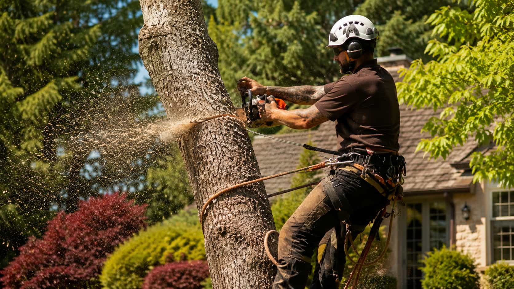

Clear request preparation
Oakline helps homeowners organize tree-related request details before local provider follow-up begins.
Start requestAbout Oakline
Oakline helps homeowners submit project details and review participating provider options. Oakline does not directly perform tree work or guarantee provider terms.

Why Oakline exists
Homeowners often start with uncertainty: Is this removal, trimming, cleanup, clearing, or assessment? Oakline exists to make that first step more structured and transparent.
The platform is intentionally clear about its role. It helps route information and compare options; it does not present itself as the company performing the work.
About Oakline
Oakline is an independent matching platform that helps homeowners organize tree-related request details before comparing participating local provider options.
Oakline helps homeowners organize tree-related request details before local provider follow-up begins.
Start request
Compare availability, scope, cleanup expectations, pricing factors, and provider-specific next steps.
View categoriesOakline is a matching platform. Final terms, pricing, scheduling, and service details come from providers.
How it worksPopular request categories
Oakline helps homeowners organize project details and compare participating local provider options.
For dead, leaning, crowded, or unwanted trees where property context and provider fit matter.
For branch clearance, canopy shaping, overgrowth, roofline concerns, and maintenance-focused requests.
For visible stumps, leftover roots, grinding depth questions, debris handling, and yard restoration concerns.
For fallen limbs, blocked access, storm debris, urgent cleanup details, and local provider availability.
About Oakline
Oakline helps homeowners organize visible tree-related details before comparing participating local provider options. Instead of submitting a vague request, homeowners can describe the tree condition, nearby structures, access concerns, timing needs, and cleanup expectations.
Provider participation may depend on ZIP code, route coverage, weather, project complexity, and local demand. Oakline helps structure the request, but availability, timing, and response details come from participating providers directly.
Oakline is not a tree removal company and does not perform the work. Homeowners should review provider licensing, insurance, written scope, cleanup terms, pricing factors, warranties, and service agreements before choosing whether to continue.
Oakline helps with the first step: organizing the request and making provider comparison easier. Final pricing, scheduling, project scope, cleanup, and service outcomes are handled between the homeowner and the provider they choose.
Platform guidance
Homeowners usually get a more useful first response when the request includes visible tree conditions, nearby structures, access notes, and timing preferences instead of only a short service label.
Oakline is an independent matching platform. Licensing, insurance, written scope, cleanup details, warranties, and service terms should always be reviewed directly with the provider before hiring.
A lower price does not always mean a better fit. It helps to compare availability, cleanup handling, communication quality, written scope, and next-step expectations before moving forward.
Service categories
Useful by design
Oakline focuses on request organization, comparison, and clear disclosure instead of pressure-heavy promises.
Submit details that help participating providers understand where and what the project is.
Review availability, scope, cleanup, access, and pricing factors before choosing.
Oakline is not a direct tree service company and does not set provider terms.
Tree service categories are kept together so the first step feels more manageable.
Because Oakline is an independent provider-matching platform, not a direct tree service company. The wording is meant to keep the user experience transparent.
Oakline may help surface participating options, but homeowners should compare provider details and decide independently.
The independent provider hired by the homeowner is responsible for any contracted work, subject to that provider's terms.
No. Submitting a request through Oakline does not create a direct service contract with Oakline.